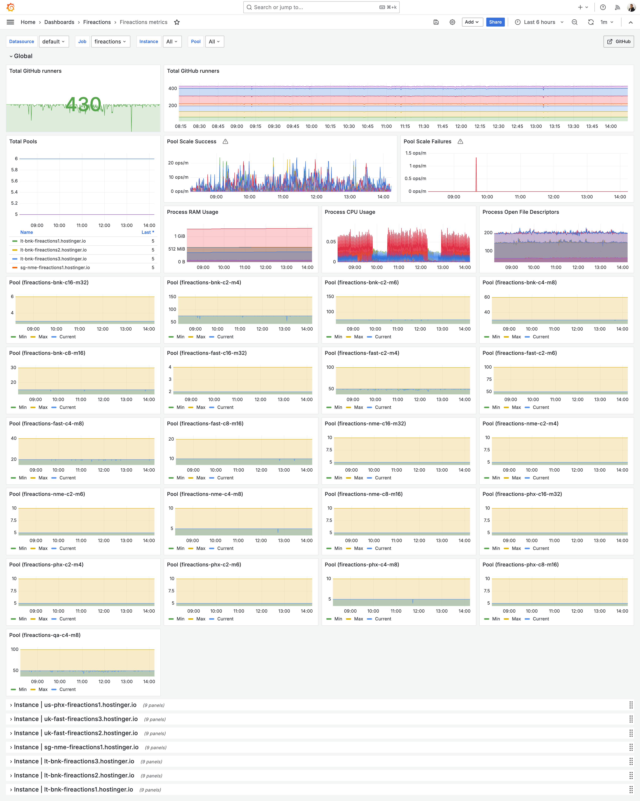

Monitoring
Fireactions provides Prometheus metrics for monitoring.
The metrics can be enabled by setting the metrics.enabled configuration option to true. The metrics are exposed on the /metrics endpoint on the address and port specified in the metrics.address and metrics.port configuration options.
Metrics
The following metrics are available, excluding the default Prometheus metrics:
| Metric Name | Type | Description | Labels |
|---|---|---|---|
fireactions_server_up |
Gauge | Whether the server is up (1) or down (0) | None |
fireactions_pools_total |
Gauge | Total number of pools | None |
fireactions_pool_runners_current |
Gauge | Current number of running runners in a pool | pool, organization |
fireactions_pool_runners_desired |
Gauge | Desired number of runners in a pool (replicas) | pool, organization |
fireactions_pool_status |
Gauge | Status of a pool (0 = paused, 1 = active) | pool |
fireactions_pool_scale_requests_total |
Counter | Number of scale API requests for a pool | pool |
fireactions_scale_operations_total |
Counter | Total number of individual scale operations | pool, organization, direction, status |
fireactions_scale_duration_seconds |
Histogram | Time taken to complete a scale operation | pool, organization, direction |
Metric Details
Server Metrics
- fireactions_server_up: Indicates if the Fireactions server is running. Value is 1 when up, 0 when down.
Pool Metrics
- fireactions_pools_total: Total count of configured pools.
- fireactions_pool_runners_current: Actual number of VMs currently running in each pool.
- fireactions_pool_runners_desired: Target number of VMs (replicas) for each pool.
- fireactions_pool_status: Pool operational state (1 = active and scaling, 0 = paused).
Scale Metrics
- fireactions_pool_scale_requests_total: Counts API calls to scale a pool (via
/pools/{id}/scaleendpoint). - fireactions_scale_operations_total: Counts individual VM scale operations with labels:
direction:up(adding VM) ordown(removing VM)status:successorfailure- fireactions_scale_duration_seconds: Histogram of time taken for each scale operation (up or down).
Example Queries
Monitor pool capacity utilization:
Scale operation success rate:
sum(rate(fireactions_scale_operations_total{status="success"}[5m])) by (pool, direction)
/ clamp_min(sum(rate(fireactions_scale_operations_total[5m])) by (pool, direction), 1e-10)
Average scale-up duration:
rate(fireactions_scale_duration_seconds_sum{direction="up"}[5m])
/ clamp_min(rate(fireactions_scale_duration_seconds_count{direction="up"}[5m]), 1e-10)
Pools not at desired capacity:
Grafana Dashboard
Example Grafana dashboard for vizualisation of Fireactions metrics:
